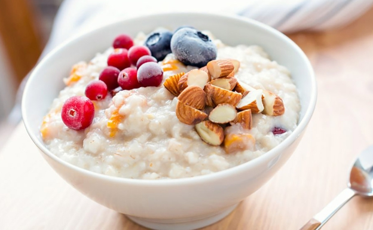

Porridge de avena
Descripcion
El porridge de avena es un postre ideal para ser consumido al inicio del dia, es alto en carbohidratos y dependiendo de los adicionales puede tener un alto contenido de grasas y proteinas.
Ingredientes
- Avena
- Leche
- Semillas de chia
- Yogur proteico
- Endulzante
Pasos
- En un frasco agregar 1/2 de avena.
- Agregar 4 cucharitas de chia.
- Agregar el yogur y poco a poco la leche para darle consistencia espesa.
- Endulzar a gusto y refrigerar por 12+ horas.
- Serviri y disfrutar.
- Opcional: Se pueden agregar frutas a gusto para complementar.